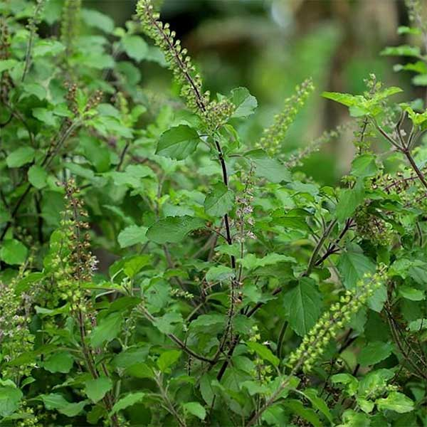
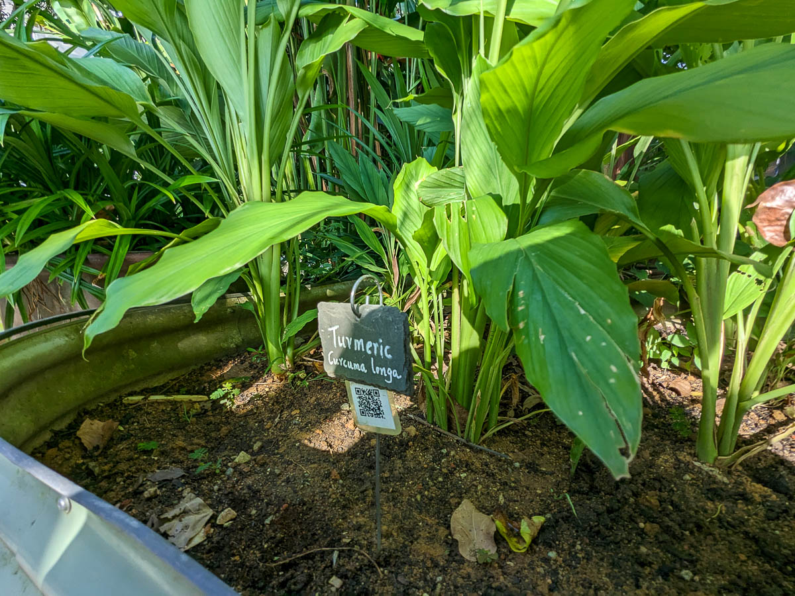

Welcome to the Virtual Herbal Garden
The AYUSH sector relies heavily on medicinal plants and herbs, which form the backbone of traditional healing practices. Our Virtual Herbal Garden allows you to explore these plants from the comfort of your home.
Interactive 3D Models
Tulsi (Ocimum sanctum)
Common Names: Holy Basil, Sacred Basil
Habitat: Native to India, commonly found in gardens.
Medicinal Uses: Known for its anti-inflammatory, anti-viral, and antioxidant properties.
Cultivation: Prefers warm climates and well-drained soil. Grows well in pots or garden beds.
Learn More
Ashwagandha (Withania somnifera)
Common Names: Indian Ginseng, Winter Cherry
Habitat: Native to India, grows well in arid regions.
Medicinal Uses: Adaptogen, helps reduce stress and anxiety, boosts immunity.
Cultivation: Prefers dry, well-drained soil and full sunlight.
 Learn More
Learn More
Turmeric (Curcuma longa)
Common Names: Haldi, Indian Saffron
Habitat: Native to Southeast Asia, requires a warm, humid climate.
Medicinal Uses: Anti-inflammatory, antioxidant, used in digestive health.
Cultivation: Grows in rich, well-drained soil with ample rainfall.
 Learn More